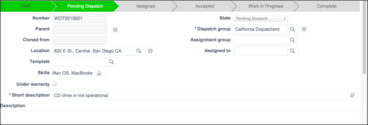

Using Auto-Assignment
| |
Note: This article applies to Fuji and earlier releases. For more current information, see Auto Assignment at http://docs.servicenow.com
The ServiceNow Wiki is no longer being updated. Visit http://docs.servicenow.com for the latest product documentation. |
1 Overview
The Auto-Assignment feature can be enabled for requests or tasks, depending on the Service Management (SM) application's configuration settings:
- If the Requests are assigned via auto-assignment option is enabled, requests are automatically assigned.
- If the Tasks are assigned via auto-assignment option is enabled, the tasks in a request are automatically assigned.
When auto-assignment is enabled and a task is qualified or marked as Ready for Work, an appropriate agent is automatically assigned to the task and it is moved to the Assigned state. If the task cannot be auto-assigned, a user with the dispatcher role must adjust the values in the request or task form and then save the record.
The system uses these criteria to assign agents automatically:
- Geolocation: The system uses geolocation tracking to find available agents when auto-assigning a task.
- Skills: You can configure whether an agent's skills should be considered when auto-assigning a task (starting with the Fuji release).
- Availability: Auto-assignment considers an agent's existing schedule when auto-assigning additional tasks.
- Task windows: Auto-assignment attempts to schedule within any configured task windows. If a window cannot be scheduled for any available agents, auto-assignment fails.
- Task dependencies: ServiceNow considers any upstream task dependencies when auto-assigning a task.
| |
Note: In the Fuji release, Work Management was renamed Field Service Management. If you are using a version prior to Fuji, refer to the Work Management - Versions Prior to Fuji pages. |
2 Auto-Assignment of Requests and Tasks
If you have the qualifier or initiator user role, you can automatically assign a task to a dispatch group when the Requests are assigned using auto-assignment option is set in the SM application's configuration; for example, Facilities Configuration (starting with the Fuji release).
- In any SM application, do one of the following:
- Open a request in the Awaiting Qualification state or one that has been qualified automatically, and then open a task in the Draft state.
- Open a task in the Ready for Work state.
- Select an Assignment group.
- If the Tasks are assigned via auto-assignment and Auto-selection of agents will consider location of agents configuration options are set, enter a location.
- Auto-dispatch will fail unless the task contains a valid location.
- IIf the Tasks are assigned via auto-assignment option is enabled, create a schedule for this task in the Planned section, or let the system determine the times. For instructions, see Creating Work Order Tasks.
- By default, ServiceNow enters the current date and time in the Window start field. If you do not create a schedule or a fixed window, ServiceNow uses the Window start value to look for an agent who has that time slot open.
- Click Qualified or Ready for Work.
- The view returns to the previous page, and a success message appears. The system assigns an agent to the task, enters the agent's assignment group in the task record, and moves the state to Assigned.
- 
- If auto-assignment fails, the message indicates either that no agent was available or that the task did not specify a location. The system moves tasks that fail auto-assignment to the Remain in the Pending Dispatch state.
- To auto-assign a task that failed previously, enter any missing information or change the schedule, and save the record.

{kind=link}